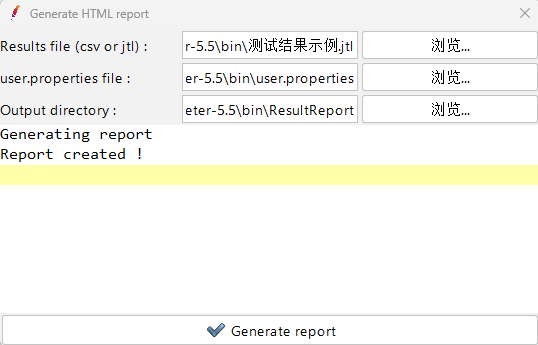
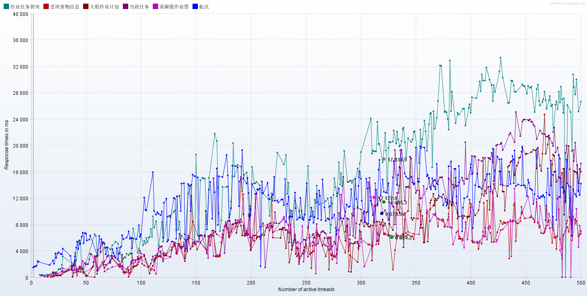
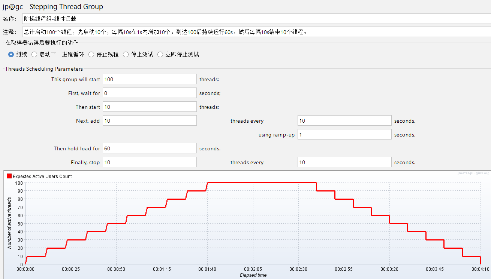

JMeter压力测试方案
[TOC]
1. 项目基本设置
1-1 结构设置
一个简单的压力测试项目如下：
支持全局 host，自动获取 token，数据库连接以及各项性能指标的统计，可以生成测试报告。
1-2 安装插件
下载 jmeter-plugins-manager 的 jar 包，地址：Install :: JMeter-Plugins.org 。
将其放在
%JMETER_HOME%/lib/ext下，重启 Jmeter，在顶部菜单可以看到选项>Plugins Manager。- 点击选项>Plugins Manager，在 Available Plugins 中搜索
Custom Thread Groups（包含Stepping Thread Group、Ultimate Thread Group 等常用元件）和jpgc-Standard Set（包含一些基本图表，如响应时间、吞吐量、命中率等），点击 Apply Changes And Restart Jmeter 即可自动安装所需插件。
1-3 生成测试报告
环境要求
- Jmeter3.0及以上
- JDK1.8及以上
- 已有 jmx 脚本文件
命令行生成
进入 jmx 脚本文件所在目录，启动 cmd 命令行，输入以下指令：
1
2jmeter -n -t D:\CS\apache-jmeter-5.5\bin\示例.jmx -l 测试结果示例.jtl -e
-o D:\CS\apache-jmeter-5.5\bin\ResultReport参数说明：
- -n：非 GUI 模式执行 Jmeter
- -t：待执行测试脚本的路径，格式为 jmx
- -l：测试结果的保存路径，格式为 jtl
- -e：测试结束后生成测试报告
- -o：测试报告的保存路径
执行成功如下图所示：
进入测试报告的保存路径，如下图所示：
打开 index.html 即可查看测试报告，如下图所示：
手动生成
设置测试结果保存路径，聚合报告或汇总报告均可，如下图所示：
测试结束后，点击工具>Generate HTML report，依次选择测试结果文件、配置文件、测试报告保存路径（必须为空文件夹），生成成功则如下图所示：

2. 常规压力测试
2-1 常规并发测试
要测试接口的并发性能，通常可以使用线程组设置一定的并发数和测试时间。
按照次数
按照时间
2-2 常见指标解释
线程数：一般称为并发量，用于观察接口的吞吐量。
持续时间：指压测运行的时间长度，用于观察接口的稳定性。
Ramp-up period：指每个请求发生的总时间间隔，单位是秒。如果线程数为 5，而 Ramp-up 时间为 10，那么每个请求之间的间隔是 10/5=2 秒。Ramp-up period 为 0 时表示同时并发请求。
TPS（Transactions per Second）：也称为吞吐量，每秒处理的事务数。
宏观上 TPS=并发数/平均响应时间，这里的并发数是指单位时间内发出的请求数量，是绝对同一时间，但是我们通常说的是相对并发，也就是线程数。
RT 响应时间（Reponse Time）：从客户端向服务器发送请求到响应接收完成的用时消耗。
平均响应时间：平均 RT 响应时间，样本数/RT 响应时间。
延迟时间（Latency Time）：从客户端向服务器发送请求到开始接收响应的时间，包括连接时间。
连接时间（Connect Time）：建立连接所花费的时间，包括 SSL 三次握手的时间。
延迟时间-连接时间可以看作请求在服务端处理的时间，如果结果较大，说明响应时间主要在服务端消耗，反之说明响应时间主要在建立 TCP 连接中消耗。
2-3 常见图表解释
聚合报告，以下图为例：
- Label：每个请求的名称
- 样本：表示该请求发出的次数
- 平均值：单个请求的平均响应时间
- 中位数：50%请求的响应时间
- 90%百分位：90%请求的响应时间
- 95%百分位：95%请求的响应时间
- 99%百分位：99%请求的响应时间
- 最小值：最小响应时间
- 最大值：最大响应时间
- 异常%：出现错误的请求数量/请求总数
- 吞吐量：每秒完成的请求数量
- 接收/发送KB/sec：每秒从服务器接收/向服务器发送的数据量
jp@gc - Active Threads Over Time
活跃线程数 vs 时间
jp@gc - Response Times Over Time
平均响应时间 vs 时间
jp@gc - Response Latencies Over Time
响应延迟时间 vs 时间
jp@gc - Connect Times Over Time
请求连接时间 vs 时间
jp@gc - Response Times vs Threads
平均响应时间 vs 线程数

jp@gc - Transaction Throughput vs Threads
吞吐量 vs 线程数
jp@gc - Transactions per Second
吞吐量 vs 时间
jp@gc - Response Codes per Second
状态码 vs 时间
3. 分布式锁测试
3-1 概念
锁的目的是对资源进行一种并发控制。而分布式系统不可能同时保证一致性(Consistency)、 可用性(Availability) 和分区容忍性(Partition tolerance)。当有多个消费者对使用同一资源时，为了避免冲突，需要对其进行串行控制，也即同时只能有一个消费者占用某资源。Java 中的 synchronized、Lock等都是为了解决该问题而出现。分布式锁，则是基于分布式系统实现的，在系统间进行互斥访问共享资源的一种方式。
分布式锁具有以下特点：
- 互斥性：同一时刻只能有一个线程持有锁；
- 可重入性：同一节点上的同一个线程可以多次获取锁；
- 高可用：防止分布式锁失效，防止死锁；
- 阻塞和非阻塞性：能够及时从阻塞状态中被唤醒。
分布式锁的实现方式主要有以下几种：
- 基于数据库，如 Mysql；
- 基于分布式缓存，如 Redis、Memcached 。
3-2 同步并发测试
要验证分布式锁，就要在同一时刻让多个线程发起同一请求。有两种方法设置同步并发线程：
通过 Ramp-up period（由于线程启动延迟，可能不会严格同步）
通过同步定时器（可以保证同一时刻）
右键 HTTP 请求，添加>定时器>同步定时器。
运行之后，使用表格查看结果，可见请求发送时间完全一致，如下图所示：
进一步结合数据库的相关数据项变更，我们可以验证分布式锁的正确性。
4. 线性负载
在测试过程中，有时需要对被测对象不断增加压力，直至某个值后持续运行一段时间，我们可以使用 Stepping Thread Group 元件来模拟。

参数说明：
- This group will start：加载到多少个线程。如图总计加载 100 个线程。
- First, wait for：启动后等待多长时间启动第一个线程。
- Then start：第一次启动多少线程。
- Next, add/threads every：间隔多久再启动多少线程。
- Using ramp-up：启动线程的时间。如图中，10 个线程在 1 秒内加载完成。
- Then hold load for：线程全部启动后持续运行多长时间。
- Finally, stop/threads every：间隔多久停止多少线程。如图中，每 10 秒停止 10 个线程。
5. 步进负载和波浪形负载
使用 Ultimate Thread Group 元件可以设置多个线程作业计划，持续增加负载，实现稳定性测试场景和浪涌场景，注意每一行是独立的线程组，需要计算它们的时间线。
步进负载

参数说明：
- Start Thread Count：该计划总计加载的线程数。
- Initial Delay, Sec：延迟多长时间启动第一个线程。
- Startup Time, Sec：启动所用线程需要的时间。
- Hold Load For, Sec：持续运行的时间。
- Shutdown Time：在多长时间内停止所有线程。
波浪形负载